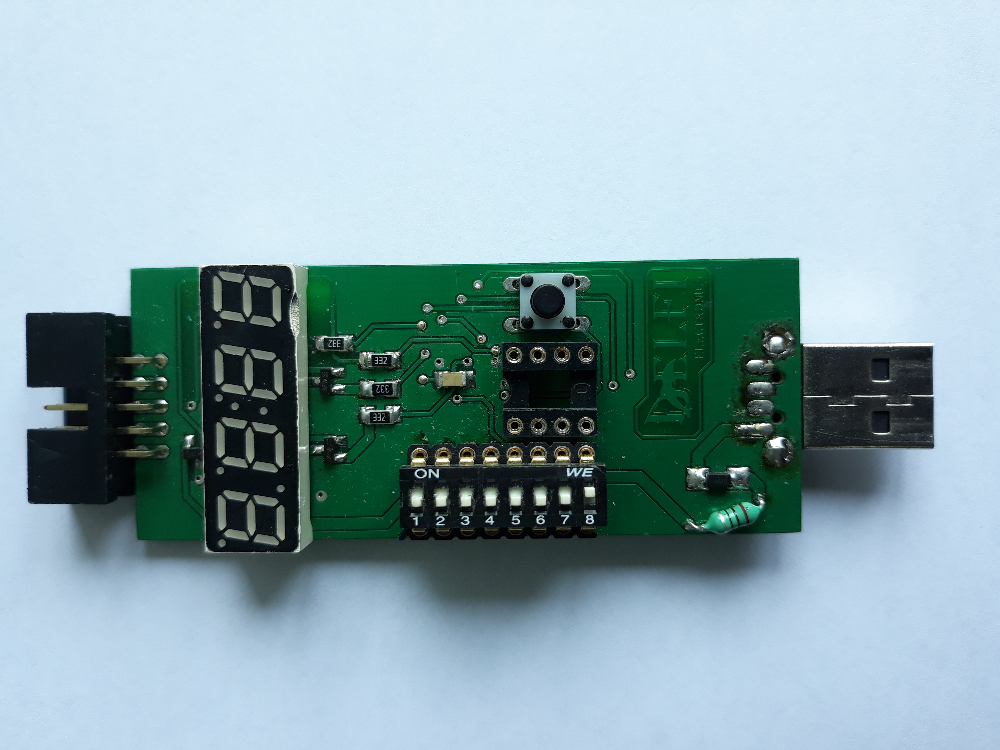
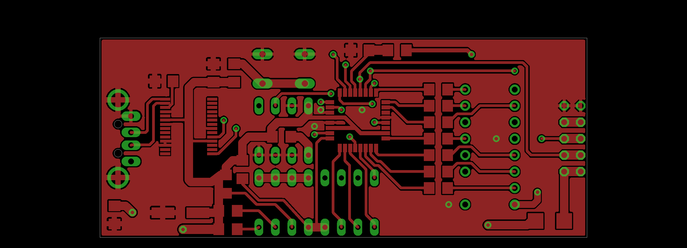

Prototyp LX-EMI01 (PCB v1.1, lipiec 2018).
Lewy koniec: złącze IDC do centralki (ISD-02).
Prawy koniec: wtyk USB-A (zasilanie lub PC).
Centrum: wyświetlacz 7-seg 4-cyfrowy, DIP-switch 8-pozycyjny,
gniazdo pamięci EEPROM, przycisk S1.

Widok warstwy top PCB v1.1 (Eagle CAD, 2-warstwowa).
Rewizje: v1.0 v1.1 v1.2.
Częste usterki central Laskomex miały prozaiczne \'zródło:
błędne wartości w określonych komórkach EEPROM.
Serwisant znał adres i wartość do wpisania, ale potrzebował
laptopa z oprogramowaniem, kabla szeregowego i adaptera — zestaw
niezgrabny w terenie, wra\.zliwy na sterowniki, niepraktyczny w szafie
elektrycznej czy skrzynce na klatce schodowej.
Koncepcja LX-EMI01 to skalowanie formy do środowiska pracy:
centralki montowane są w miejscach trudno dostępnych, więc
narzędzie musi być małe, pewne w chwycie i niezale\.zne.
Ka\.zde wymaganie serwisowe stało się decyzją konstrukcyjną:
długi wąski kształt = pewny chwyt jedną ręką;
złącza naprzeciw siebie = moduł działa jak przedłu\.zacz
w linii prostej, kable nie wyginają się ostro kątem prostym;
zasilanie z centralki przez ISD-02 = zero baterii, zero powerbanku,
zero szukania gniazda.
title=01 Ergonomia narzędzia serwisowego: forma podyktowana środowiskiem]
Ka\.zda decyzja projektowa wynika z analizy miejsca pracy instalatora —
nie z wygody projektanta:
Format pendrive'a (długi, wąski):
pewny chwyt jedną ręką w ciasnej szafie elektrycznej;
mo\.zliwość pracy bez odkładania modułu.
Złącza na przeciwnych ko\'ncach płytki:
moduł działa jako mechaniczny przedłu\.zacz między centralą
a kablem USB — brak ostrych zgięć, brak naprę\.zeń
złączy.
Zasilanie z centralki (ISD-02): instalator nie potrzebuje
ani baterii, ani powerbanku, ani gniazdka sieciowego —
energia pochodzi wprost z urządzenia serwisowanego.
Gniazdo EEPROM: mo\.zliwość wyjcia chipa z centralki
i pracy offline przy biurku — gdy centralka jest za głęboko
by wygodnie korzystać z wyświetlacza.
title=02 Nawigacja binarna DIP-switch: klawiatura bez klawiszy]
Ka\.zda z funkcji ma unikatowy binarny adres na klawiaturze DIP-8
(np. suwak 1 = hasło Proel, suwaki 3+2+1 = hasło lokatora na \.zywo).
Suwak 5 = tryb edycji.
Krótkie naciśnięcie S1 zmienia wartość (0–9),
długie 3 s przechodzi do kolejnej cyfry.
Obsługa pełnego EEPROM bez klawiatury alfanumerycznej:
DIP-8 koduje dowolny bajt (0x00–0xFF) jednocześnie, zero błędów
literowych sekwencji klawiszy.
Dwa tryby wyświetlania:
migający fragment = aktywna edycja danej pozycji;
stały = podgląd bez zmian.
Potwierdzenie: długie przytrzymanie komunikat
donE.
Dwa tryby dostępu do pamięci:
gniazdo EEPROM (chip offline) lub złącze ISD-02 (centralka
podłączona, zasilanie z niej).
title=03 PELP: jednoprzyciski transfer tabeli kodów między markami i generacjami]
Funkcja PELP (suwaki 6+5+1) wykonuje pełną migrację
tabeli kodów lokatorskich:
centralka Proel CD1803 lub Laskomex CD2000/CD2200 (starsza generacja)
Laskomex CD2500/CD2501/CD2502/CD3100 (nowsza generacja).
Jedno naciśnięcie S1: moduł sprawdza połączenie,
weryfikuje format \'zródła, konwertuje i wpisuje do docelowej pamięci
EEPROM — cały proces bez komputera, bez ręcznego przepisywania.
Potencjał biznesowy: wymiana starej centralki na nową w bloku
mieszkalnym = setki kodów lokatorów do przepisania.
LX-EMI01 redukuje tę pracę do jednej minuty.
Znajomość protokołu EEPROM obu producentów od wewnątrz:
format danych Proel i Laskomex zaimplementowany firmware'owo
na poziomie adresów pamięci.
title=04 Architektura zdalnego zarządzania: 3-poziomowy dostęp przez sieć]
W trybie PC moduł staje się transparentnym mostem USB<em class='math'>łeftrightarrowRS232.
Aplikacja serwerowa ,,Serwer Manage Laskomex System'' (VB.NET, TCP/IP)
tworzy trzy poziomy dostępu:
HQ Laskomex TCP/IP
laptop instalatora USB
LX-EMI01 ISD-02
centralka.
Demo przed managementem (lipiec 2018):
zdalne pobranie tabeli z centralki Proel CD1803, konwersja formatu
i wgranie do centralki Laskomex — bez fizycznej obecności przy sprzęcie.
USB Bootloader: aktualizacja firmware modułu w terenie
bez programatora ISP — wystarczy port USB.
Topologia analogiczna do współczesnych systemów IoT:
cloud gateway urządzenie ko\'ncowe.
Zaprojektowana w 2018 r., przed upowszechnieniem się tego wzorca
w bran\.zy domofonowej.
| ATmega (AVR) + BASCOM BASIC; USB Bootloader do aktualizacji w terenie |
|---|
| gniazdo EEPROM (tryb offline) |
| USB-A — transparent bridge do PC |
| Proel CD1803; Laskomex CD2000, CD2200, CD2500, CD2501, CD2502, CD3100, CD2600 |
| VB.NET Windows Forms + TCP/IP (,,Serwer Manage Laskomex System'') |
| forma: długi, wąski (pendrive format) |
Wynik:
Działający prototyp (5 szt.); ≈2 sprzedane.
Demo na \.zywo przed managementem Laskomex — zdalna edycja EEPROM
i konwersja Proel→Laskomex — wzbudziło du\.ze zainteresowanie.
Projekt został zablokowany przez długoletnich pracowników z powodów
pozatechnicznych.
Koncepcja (ergonomia serwisowa + migracja cross-brand + zdalne
zarządzanie przez sieć) pozostaje aktualna:
współczesne systemy IoT budują dokładnie taką samą topologię
i stoją przed identycznym problemem kompatybilności starszych protokolów.